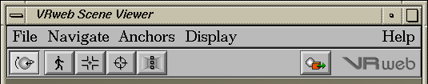

The file menu offers the following commands:
opens a VRML scene file on the file system. The default file mask is
*.wrl* which matches files ending with ".wrl" and
".wrl.gz". Select a directory or file by double-clicking it or
entering its name in the field editor. Tip: "~" and "~user" can be
used to refer to home-directories. Space can be used for filename
completion (if no mask entered).
lets you save the current scene to disk. You will be asked for confirmation before overwriting existing files. Save/Save as functionality only differs in edit mode.
is reserved for file conversions (currently from "SDF", the previous native scene format in Hyper-G, to VRML).
See help for the VRweb VRML editor.
are reserved for the appropriate functions.
opens a window containing the parser error messages and warnings. You can select the function again or press the OK button to close the window.
exits VRweb.
goes to the overview page of the on-line help in your web browser (if properly installed).
opens a window with version information.

The left group of icons changes the navigation mode to (in order):
Flip, Walk, Fly, Fly To or Heads Up.
The button on the right side toggles anchor display.
Keeping the mouse over a button for a second displays a bubble help window.
You can use the function keys F4 for flip, F5--F8 for walk to heads up and F9 for anchors. These keys have probably the same layout (spacing) on your keyboard as on the toolbar.
Tip: Statusline fields can be scrolled by selecting text with
the left mouse button or by dragging the field with the middle
mouse button.
The left field of status line tells you either the document URL or the
description and destination URL of a selected anchor.
On the right side you see the number of polygons and/or primitives
(cubes, spheres, etc.) of the VRML data (including inlines) and the
note "textured" if the scene containes texture images.
During download of inline
data (WWWInline, textures), you get a progress indicator. The left
field indicates the connection status (connect or transfer), the URL
and the amout of data being downloaded. The stop button on the right
side lets you abort the transfer.
Back to overview.
Status line